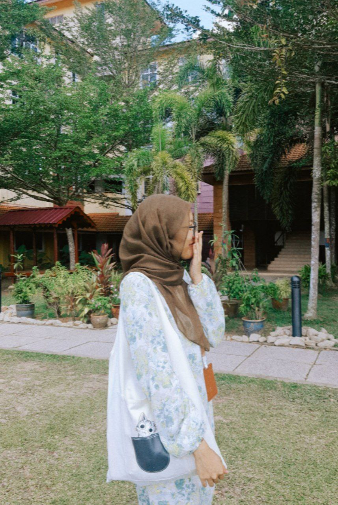
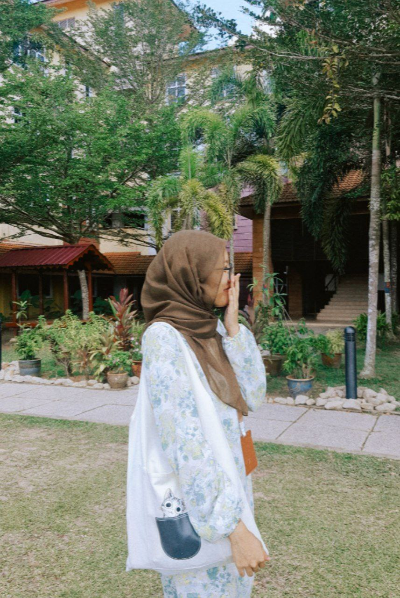

| Biodata | ||
| Full Name | : Najiha binti Nur Azmi |  |
| Date of Birth | : 31/12/2004 | |
| Age | : 20 | |
| Gender | : Female | |
| Phone Number | : 01163435330 | |
| University Name | : Universiti Teknologi MARA Cawangan Kampus Segamat | |
| Biodata | ||
| Full Name | : Najiha binti Nur Azmi |  |
| Date of Birth | : 31/12/2004 | |
| Age | : 20 | |
| Gender | : Female | |
| Phone Number | : 01163435330 | |
| University Name | : Universiti Teknologi MARA Cawangan Kampus Segamat | |
Hi! I'm Najiha, a diploma student
in Information Management, passionate
about writing stories, food hunting,
and creating memories by making videos
throughout my journey in life.Since
middle school, I have always
been fascinated by editing
and making videos about
my memories but I haven't
got the chance to do
so until now in my
campus journey.Fact about
me is that I really
enjoy reading, writing stories,
and love spending my alone
time to level up
myself for the future.